Week 11: Decision Trees
DSAN 5000: Data Science and Analytics
Section 02
Tuesday, November 7, 2023
Schedule
Code
cb_palette = ["#E69F00", "#56B4E9", "#009E73", "#F0E442", "#0072B2", "#D55E00", "#CC79A7"]
from IPython.display import Markdown
def disp(df, floatfmt='g', include_index=True):
return Markdown(
df.to_markdown(
floatfmt=floatfmt,
index=include_index
)
)
def summary_to_df(summary_obj, corner_col = ''):
reg_df = pd.DataFrame(summary_obj.tables[1].data)
reg_df.columns = reg_df.iloc[0]
reg_df = reg_df.iloc[1:].copy()
# Save index col
index_col = reg_df['']
# Drop for now, so it's all numeric
reg_df.drop(columns=[''], inplace=True)
reg_df = reg_df.apply(pd.to_numeric)
my_round = lambda x: round(x, 2)
reg_df = reg_df.apply(my_round)
numeric_cols = reg_df.columns
# Add index col back in
reg_df.insert(loc=0, column=corner_col, value=index_col)
# Sigh. Have to escape | characters?
reg_df.columns = [c.replace("|","\|") for c in reg_df.columns]
return reg_df\[ \DeclareMathOperator*{\argmax}{argmax} \DeclareMathOperator*{\argmin}{argmin} \newcommand{\bigexpect}[1]{\mathbb{E}\mkern-4mu \left[ #1 \right]} \newcommand{\definedas}{\overset{\text{defn}}{=}} \newcommand{\definedalign}{\overset{\phantom{\text{defn}}}{=}} \newcommand{\eqeventual}{\overset{\text{eventually}}{=}} \newcommand{\expect}[1]{\mathbb{E}[#1]} \newcommand{\expectsq}[1]{\mathbb{E}^2[#1]} \newcommand{\fw}[1]{\texttt{#1}} \newcommand{\given}{\mid} \newcommand{\green}[1]{\color{green}{#1}} \newcommand{\heads}{\outcome{heads}} \newcommand{\iqr}{\text{IQR}} \newcommand{\kl}{\text{KL}} \newcommand{\lik}{\mathcal{L}} \newcommand{\mle}{\textsf{ML}} \newcommand{\orange}[1]{\color{orange}{#1}} \newcommand{\outcome}[1]{\textsf{#1}} \newcommand{\param}[1]{{\color{purple} #1}} \newcommand{\paramDist}{\param{\boldsymbol\theta_\mathcal{D}}} \newcommand{\pgsamplespace}{\{\green{1},\green{2},\green{3},\purp{4},\purp{5},\purp{6}\}} \newcommand{\prob}[1]{P\left( #1 \right)} \newcommand{\purp}[1]{\color{purple}{#1}} \newcommand{\red}[1]{\color{red}#1} \newcommand{\spacecap}{\; \cap \;} \newcommand{\spacewedge}{\; \wedge \;} \newcommand{\tails}{\outcome{tails}} \newcommand{\Var}[1]{\text{Var}[#1]} \newcommand{\bigVar}[1]{\text{Var}\mkern-4mu \left[ #1 \right]} \]
Today’s Planned Schedule (Section 02):
| Start | End | Topic | Recording | |
|---|---|---|---|---|
| Lecture | 12:30pm | 1:00pm | Quiz Prep → | |
| 1:00pm | 1:20pm | Quiz 5.1 | ||
| 1:20pm | 1:40pm | Decision Trees and Entropy → | ||
| 1:40pm | 2:00pm | Decision Trees for Classification → | ||
| Break! | 2:00pm | 2:10pm | ||
| 2:10pm | 2:40pm | Decision Trees for Regression → | ||
| 2:40pm | 3:00pm | Student Presentation |
Quiz Prep
Reducing Dimensionality
- Method 1: Feature Selection. Selecting a subset of existing features:
| \(F_1\) | \(F_2\) | \(F_3\) |
|---|---|---|
| 0.8 | 0.9 | 0.1 |
| 0.6 | 0.4 | 0.1 |
→
| \(F_1\) | \(F_2\) | \(F_3\) |
|---|---|---|
| 0.8 | 0.9 | 0.1 |
| 0.6 | 0.4 | 0.1 |
→
| \(F_1\) | \(F_3\) |
|---|---|
| 0.8 | 0.1 |
| 0.6 | 0.1 |
- Method 2: Feature Extraction. Constructing new features as combinations/functions of the original features
| \(F_1\) | \(F_2\) | \(F_3\) |
|---|---|---|
| 0.8 | 0.9 | 0.1 |
| 0.6 | 0.4 | 0.1 |
→
\[ \begin{align*} {\color{#56b4e9}F'_{12}} &= \frac{{\color{#e69f00}F_1} + {\color{#e69f00}F_2}}{2} \\ {\color{#56b4e9}F'_{23}} &= \frac{{\color{#e69f00}F_2} + {\color{#e69f00}F_3}}{2} \end{align*} \]
→
| \(F'_{12}\) | \(F'_{23}\) |
|---|---|
| 0.85 | 0.50 |
| 0.50 | 0.25 |
Principal Component Analysis (PCA)
- We know this is feature extraction since we obtain new dimensions:
Code
library(readr)
library(ggplot2)
gdp_df <- read_csv("assets/gdp_pca.csv")
dist_to_line <- function(x0, y0, a, c) {
numer <- abs(a * x0 - y0 + c)
denom <- sqrt(a * a + 1)
return(numer / denom)
}
# Finding PCA line for industrial vs. exports
x <- gdp_df$industrial
y <- gdp_df$exports
lossFn <- function(lineParams, x0, y0) {
a <- lineParams[1]
c <- lineParams[2]
return(sum(dist_to_line(x0, y0, a, c)))
}
o <- optim(c(0, 0), lossFn, x0 = x, y0 = y)
ggplot(gdp_df, aes(x = industrial, y = exports)) +
geom_point(size=g_pointsize/2) +
geom_abline(aes(slope = o$par[1], intercept = o$par[2], color="pca"), linewidth=g_linewidth, show.legend = TRUE) +
geom_smooth(aes(color="lm"), method = "lm", se = FALSE, linewidth=g_linewidth, key_glyph = "blank") +
scale_color_manual(element_blank(), values=c("pca"=cbPalette[2],"lm"=cbPalette[1]), labels=c("Regression","PCA")) +
dsan_theme("half") +
remove_legend_title() +
labs(
title = "PCA Line vs. Regression Line",
x = "Industrial Production (% of GDP)",
y = "Exports (% of GDP)"
)
Code
ggplot(gdp_df, aes(pc1, .fittedPC2)) +
geom_point(size = g_pointsize/2) +
geom_hline(aes(yintercept=0, color='PCA Line'), linetype='solid', size=g_linesize) +
geom_rug(sides = "b", linewidth=g_linewidth/1.2, length = unit(0.1, "npc"), color=cbPalette[3]) +
expand_limits(y=-1.6) +
scale_color_manual(element_blank(), values=c("PCA Line"=cbPalette[2])) +
dsan_theme("half") +
remove_legend_title() +
labs(
title = "Exports vs. Industry in Principal Component Space",
x = "First Principal Component (Axis of Greatest Variance)",
y = "Second PC"
)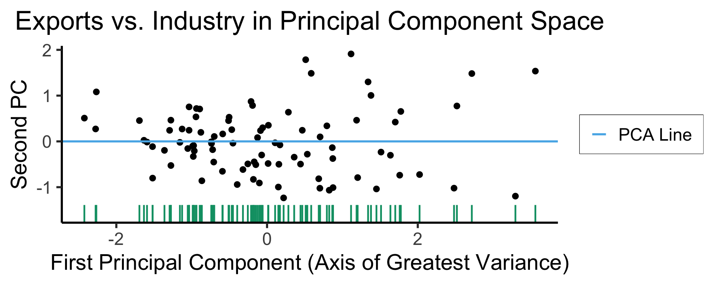
Code
library(dplyr)
library(tidyr)
plot_df <- gdp_df %>% select(c(country_code, pc1, agriculture, military))
long_df <- plot_df %>% pivot_longer(!c(country_code, pc1), names_to = "var", values_to = "val")
long_df <- long_df |> mutate(
var = case_match(
var,
"agriculture" ~ "Agricultural Production",
"military" ~ "Military Spending"
)
)
ggplot(long_df, aes(x = pc1, y = val, facet = var)) +
geom_point() +
facet_wrap(vars(var), scales = "free") +
dsan_theme("full") +
labs(
x = "Industrial-Export Dimension (First Principal Component)",
y = "% of GDP"
)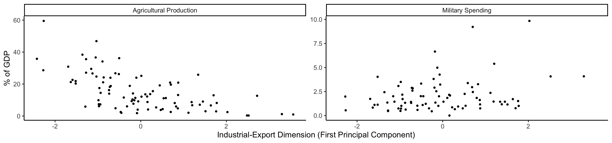
PCA Math Magic
- Remember that our goal is to find the axes along which the data has greatest variance (out of all possible axes)
- Let’s create a dataset using a known data-generating process: one dimension with 75% of the total variance, and the second with 25%:
Code
library(tidyverse)
library(MASS)
library(ggforce)
N <- 300
Mu <- c(0, 0)
var_x <- 3
var_y <- 1
Sigma <- matrix(c(var_x, 0, 0, var_y), nrow=2)
data_df <- as_tibble(mvrnorm(N, Mu, Sigma, empirical=TRUE))
colnames(data_df) <- c("x","y")
# data_df <- data_df |> mutate(
# within_5 = x < 5,
# within_sq5 = x < sqrt(5)
# )
#nrow(data_df |> filter(within_5)) / nrow(data_df)
#nrow(data_df |> filter(within_sq5)) / nrow(data_df)
# And plot
ggplot(data_df, aes(x=x, y=y)) +
# 68% ellipse
# stat_ellipse(geom="polygon", type="norm", linewidth=g_linewidth, level=0.68, fill=cbPalette[1], alpha=0.5) +
# stat_ellipse(type="norm", linewidth=g_linewidth, level=0.68) +
geom_ellipse(
aes(x0=0, y0=0, a=var_x, b=var_y, angle=0),
linewidth = g_linewidth
) +
# geom_ellipse(
# aes(x0=0, y0=0, a=sqrt(5), b=1, angle=0),
# linewidth = g_linewidth,
# geom="polygon",
# fill=cbPalette[1], alpha=0.2
# ) +
# # 95% ellipse
# stat_ellipse(geom="polygon", type="norm", linewidth=g_linewidth, level=0.95, fill=cbPalette[1], alpha=0.25) +
# stat_ellipse(type="norm", linewidth=g_linewidth, level=0.95) +
# # 99.7% ellipse
# stat_ellipse(geom='polygon', type="norm", linewidth=g_linewidth, level=0.997, fill=cbPalette[1], alpha=0.125) +
# stat_ellipse(type="norm", linewidth=g_linewidth, level=0.997) +
# Lines at x=0 and y=0
geom_vline(xintercept=0, linetype="dashed", linewidth=g_linewidth / 2) +
geom_hline(yintercept=0, linetype="dashed", linewidth = g_linewidth / 2) +
geom_point(
size = g_pointsize / 3,
#alpha=0.5
) +
geom_rug(length=unit(0.5, "cm"), alpha=0.75) +
geom_segment(
aes(x=-var_x, y=0, xend=var_x, yend=0, color='PC1'),
linewidth = 1.5 * g_linewidth,
arrow = arrow(length = unit(0.1, "npc"))
) +
geom_segment(
aes(x=0, y=-var_y, xend=0, yend=var_y, color='PC2'),
linewidth = 1.5 * g_linewidth,
arrow = arrow(length = unit(0.1, "npc"))
) +
dsan_theme("half") +
coord_fixed() +
remove_legend_title() +
scale_color_manual(
"PC Vectors",
values=c('PC1'=cbPalette[1], 'PC2'=cbPalette[2])
) +
scale_x_continuous(breaks=seq(-5,5,1), limits=c(-5,5))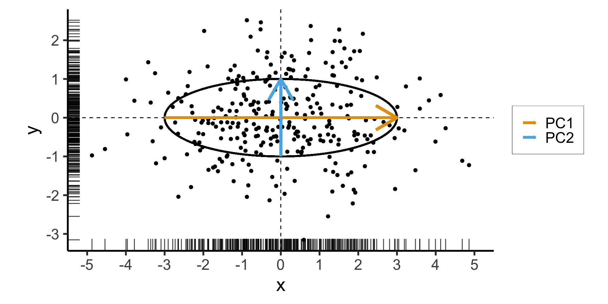
\[ \mathbf{\Sigma} = \begin{bmatrix} {\color{#e69f00}3} & 0 \\ 0 & {\color{#56b4e9}1} \end{bmatrix} \]
Two solutions to \(\mathbf{\Sigma}\mathbf{x} = \lambda \mathbf{x}\):
- \({\color{#e69f00}\lambda_1} = 3, {\color{#e69f00}\mathbf{x}_1} = (1, 0)^\top\)
- \({\color{#56b4e9}\lambda_2} = 1, {\color{#56b4e9}\mathbf{x}_2} = (0, 1)^\top\)
Now With PCA Lines \(\neq\) Axes
- We now introduce covariance between \(x\) and \(y\) coordinates of our data:
Code
library(tidyverse)
library(MASS)
N <- 250
Mu <- c(0,0)
Sigma <- matrix(c(2,1,1,2), nrow=2)
data_df <- as_tibble(mvrnorm(N, Mu, Sigma))
colnames(data_df) <- c("x","y")
# Start+end coordinates for the transformed vectors
pc1_rc <- (3/2)*sqrt(2)
pc2_rc <- (1/2)*sqrt(2)
ggplot(data_df, aes(x=x, y=y)) +
geom_ellipse(
aes(x0=0, y0=0, a=var_x, b=var_y, angle=pi/4),
linewidth = g_linewidth,
#fill='grey', alpha=0.0075
) +
geom_vline(xintercept=0, linetype="dashed", linewidth=g_linewidth / 2) +
geom_hline(yintercept=0, linetype="dashed", linewidth = g_linewidth / 2) +
geom_point(
size = g_pointsize / 3,
#alpha=0.7
) +
geom_rug(
length=unit(0.35, "cm"), alpha=0.75
) +
geom_segment(
aes(x=-pc1_rc, y=-pc1_rc, xend=pc1_rc, yend=pc1_rc, color='PC1'),
linewidth = 1.5 * g_linewidth,
arrow = arrow(length = unit(0.1, "npc"))
) +
geom_segment(
aes(x=pc2_rc, y=-pc2_rc, xend=-pc2_rc, yend=pc2_rc, color='PC2'),
linewidth = 1.5 * g_linewidth,
arrow = arrow(length = unit(0.1, "npc"))
) +
dsan_theme("half") +
remove_legend_title() +
coord_fixed() +
scale_x_continuous(breaks=seq(-4,4,2))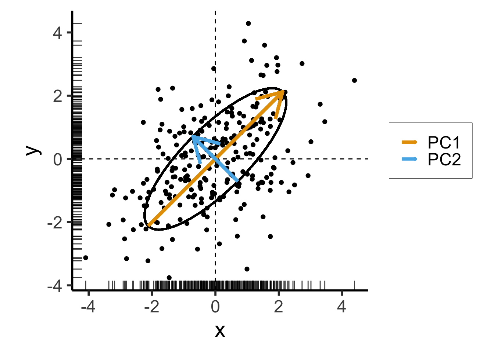
\[ \mathbf{\Sigma}' = \begin{bmatrix} 2 & 1 \\ 1 & 2 \end{bmatrix} \]
Still two solutions to \(\mathbf{\Sigma}'\mathbf{x} = \lambda \mathbf{x}\):
- \({\color{#e69f00}\lambda_1} = 3, {\color{#e69f00}\mathbf{x}_1} = (1,1)^\top\)
- \({\color{#56b4e9}\lambda_2} = 1, {\color{#56b4e9}\mathbf{x}_2} = (-1,1)^\top\)
PCA and Eigenvalues
Takeaway 1: Regardless of the coordinate system,
- Eigenvectors give us axes of greatest variance: \(\mathbf{x}_1\) is axis of greatest variance, \(\mathbf{x}_2\) is axis of 2nd-greatest variance, etc.
- The corresponding Eigenvalues tell us how much of the total variance is explained by this axis
PCA as Swiss Army Knife
- PCA can be used for both reinterpretation and reduction of dimensions!
- Consider dataset \(\mathbf{X} = (X_1, \ldots, X_n)\), with \(X_i \in \mathbb{R}^N\)
If we project each \(X_i\) onto \(N\) principal component axes:
Datapoints in PC space are linear combinations of the original datapoints! (← Takeaway 2a)
\[ X'_i = \alpha_1X_1 + \cdots + \alpha_nX_n, \]
where \(\forall i \left[\alpha_i \neq 0\right]\)
We are just “re-plotting” our original data in PC space via change of coordinates
Thus we can recover the original data from the PC data
If we project \(X_i\) onto \(M < N\) principal component axes:
- Datapoints in PC space are still linear combinations of the original datapoints (← Takeaway 2b), but now some of the scalars (weights) are 0
- We have performed statistically-principled dimensionality reduction (← Takeaway 3)
- However, original data cannot be recovered
t-SNE for Dimensionality Reduction
- t-Distributed Stochastic Neighbor Embedding (Van der Maaten and Hinton 2008)
- If \(x, y\) are neighbors in \(\mathbb{R}^{1000}\), t-SNE “succeeds” if they remain neighbors in \(\mathbb{R}^2\)
- Key hyperparameter: perplexity! Roughly, this affects the “tradeoff” between preserving local structure vs. global structure in the lower-dimensional space
- Choose \(x_i \in \mathbb{R}^{1000}\), and treat it as the center of a Gaussian ball with variance \(\sigma_i\)
- The choice of \(\sigma_i\) induces a probability distribution \(P_i\) over all other points (what is the probability of drawing \(x_j\) from \(\mathcal{N}(x_i, \sigma_i)\)?)
\[ \text{Perp}(P_i) = 2^{H(P_i)} \]
High perplexity \(\iff\) high entropy (eventually Gaussian ball will grow so big that all other points will be equally likely!). So, vary perplexity, see how plot changes
See here for an absolutely incredible interactive walkthrough of t-SNE!
What Happens As We Vary Perplexity?
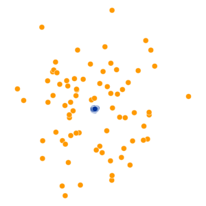
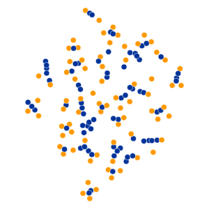
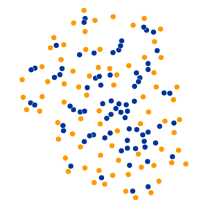
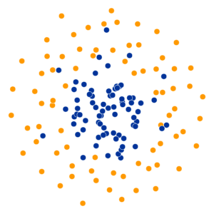
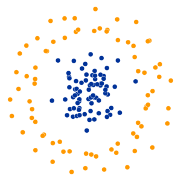
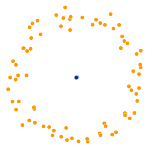
Quiz Time!
Decision Trees
20 Questions
- I am thinking of some entity. What is it?
- What questions should we ask initially?
- Why might questions on the left be more helpful than questions on the right?
| General Questions | Specific Questions |
|---|---|
| Is it a physical object? | Is it a soda can? |
| Is it an animal? | Is it a cat? |
| Is it bigger than a house? | Is it a planet? |
We Can Quantify How Good a Sequence of Questions Is!
- Assume we’re playing with someone who only knows three objects \(S = \{\text{Tree}, \text{Bird}, \text{Car}\}\), and they randomize among these such that
| \(\text{Choice}\) | Tree | Bird | Car |
| \(\Pr(\text{Choice})\) | 0.25 | 0.25 | 0.50 |
- Why might the “script” on the left be a better choice than script in the middle? Why are left and middle both better than right?
Let’s Use Math
- An optimal script minimizes average number of questions required to reach answer
\[ \begin{align*} &\mathbb{E}[\text{\# Moves}] \\ =\,&1 \cdot \Pr(\text{Car}) + 2 \cdot \Pr(\text{Bird}) \\ &+ 2 \cdot \Pr(\text{Tree}) \\ =\,&1 \cdot 0.5 + 2\cdot 0.25 + 2\cdot 0.25 \\ =\,&1.5 \end{align*} \]
\[ \begin{align*} &\mathbb{E}[\text{\# Moves}] \\ =\,&1 \cdot \Pr(\text{Bird}) + 2 \cdot \Pr(\text{Car}) \\ &+ 2 \cdot \Pr(\text{Tree}) \\ =\,&1 \cdot 0.25 + 2\cdot 0.5 + 2\cdot 0.25 \\ =\,&1.75 \end{align*} \]
\[ \begin{align*} &\mathbb{E}[\text{\# Moves}] \\ =\,&1 \cdot \Pr(\text{Bird}) + 3 \cdot \Pr(\text{Car}) \\ &+ 3 \cdot \Pr(\text{Tree}) \\ =\,&1 \cdot 0.25 + 3\cdot 0.5 + 3\cdot 0.25 \\ =\,&2.5 \end{align*} \]
Let’s Use (Different) Math
- Forgetting about the individual trees for a moment, let’s compute the entropy of the RV representing the opponent’s choice.
- In general, if \(X\) represents the opponent’s choice and \(\mathcal{R}_X = \{1, 2, \ldots, N\}\), the entropy of \(X\) is:
\[ \begin{align*} H(X) &= -\sum_{i=1}^N \Pr(X = i)\log_2\Pr(X = i) \end{align*} \]
- So in our case we have:
\[ \begin{align*} H(X) &= -\left[ \Pr(X = \text{Car}) \log_2\Pr(X = \text{Car}) \right. \\ &\phantom{= -[ } + \Pr(X = \text{Bird})\log_2\Pr(X = \text{Bird}) \\ &\phantom{= -[ } + \left. \Pr(X = \text{Tree})\log_2\Pr(X = \text{Tree})\right] \\ &= -\left[ (0.5)(-1) + (0.25)(-2) + (0.25)(-2) \right] = 1.5~🧐 \end{align*} \]
Entropy Seems Helpful Here…
- Now let’s imagine our opponent randomizes between all three options:
\[ \begin{align*} \mathbb{E}[\text{\# Moves}] &= 1 \cdot (1/3) + 2 \cdot (1/3) + 2 \cdot (1/3) \\ &= \frac{5}{3} \approx 1.667 \end{align*} \]
\[ \begin{align*} H(X) &= -\left[ \Pr(X = \text{Car}) \log_2\Pr(X = \text{Car}) \right. \\ &\phantom{= -[ } + \Pr(X = \text{Bird})\log_2\Pr(X = \text{Bird}) \\ &\phantom{= -[ } + \left. \Pr(X = \text{Tree})\log_2\Pr(X = \text{Tree})\right] \\ &= -\left[ \frac{1}{3}\log_2\left(\frac{1}{3}\right) + \frac{1}{3}\log_2\left(\frac{1}{3}\right) + \frac{1}{3}\log_2\left(\frac{1}{3}\right) \right] \approx 1.585~🧐 \end{align*} \]
The Mathematical Relationship
The smallest possible number of levels \(L^*\) for a script based on RV \(X\) is exactly
\[ L^* = \lceil H(X) \rceil \]
Intuition: Although \(\mathbb{E}[\text{\# Moves}] = 1.5\), we cannot have a tree with 1.5 levels!
Entropy provides a lower bound on \(\mathbb{E}[\text{\# Moves}]\):
\[ \mathbb{E}[\text{\# Moves}] \geq H(X) \]
Decision Tree Structure
- Leaf Nodes represent outcomes
- Branch Nodes represent questions
How Are They Built?
- Example: we find ourselves at some point on the globe, at some time during the year, and we’re trying to see whether this point+time are good for skiing
Code
library(tidyverse)
library(lubridate)
sample_size <- 100
day <- seq(ymd('2023-01-01'),ymd('2023-12-31'),by='weeks')
lat_bw <- 5
latitude <- seq(-90, 90, by=lat_bw)
ski_df <- expand_grid(day, latitude)
#ski_df |> head()
# Data-generating process
lat_cutoff <- 35
ski_df <- ski_df |> mutate(
near_equator = abs(latitude) <= lat_cutoff,
northern = latitude > lat_cutoff,
southern = latitude < -lat_cutoff,
first_3m = day < ymd('2023-04-01'),
last_3m = day >= ymd('2023-10-01'),
middle_6m = (day >= ymd('2023-04-01')) & (day < ymd('2023-10-01')),
snowfall = 0
)
# Update the non-zero sections
mu_snow <- 10
sd_snow <- 2.5
# How many northern + first 3 months
num_north_first_3 <- nrow(ski_df[ski_df$northern & ski_df$first_3m,])
ski_df[ski_df$northern & ski_df$first_3m, 'snowfall'] = rnorm(num_north_first_3, mu_snow, sd_snow)
# Northerns + last 3 months
num_north_last_3 <- nrow(ski_df[ski_df$northern & ski_df$last_3m,])
ski_df[ski_df$northern & ski_df$last_3m, 'snowfall'] = rnorm(num_north_last_3, mu_snow, sd_snow)
# How many southern + middle 6 months
num_south_mid_6 <- nrow(ski_df[ski_df$southern & ski_df$middle_6m,])
ski_df[ski_df$southern & ski_df$middle_6m, 'snowfall'] = rnorm(num_south_mid_6, mu_snow, sd_snow)
# And collapse into binary var
ski_df['good_skiing'] = ski_df$snowfall > 0
# This converts day into an int
ski_df <- ski_df |> mutate(
day_num = lubridate::yday(day)
)
#print(nrow(ski_df))
ski_sample <- ski_df |> slice_sample(n = sample_size)
ski_sample |> write_csv("assets/ski.csv")
ggplot(
ski_sample,
aes(
x=day,
y=latitude,
#shape=good_skiing,
color=good_skiing
)) +
geom_point(
size = g_pointsize / 1.5,
#stroke=1.5
) +
dsan_theme() +
labs(
x = "Time of Year",
y = "Latitude",
shape = "Good Skiing?"
) +
scale_shape_manual(name="Good Skiing?", values=c(1, 3)) +
scale_color_manual(name="Good Skiing?", values=c(cbPalette[1], cbPalette[2]), labels=c("No (Sunny)","Yes (Snowy)")) +
scale_x_continuous(
breaks=c(ymd('2023-01-01'), ymd('2023-02-01'), ymd('2023-03-01'), ymd('2023-04-01'), ymd('2023-05-01'), ymd('2023-06-01'), ymd('2023-07-01'), ymd('2023-08-01'), ymd('2023-09-01'), ymd('2023-10-01'), ymd('2023-11-01'), ymd('2023-12-01')),
labels=c("Jan", "Feb", "Mar", "Apr", "May", "Jun", "Jul", "Aug", "Sep", "Oct", "Nov", "Dec")
) +
scale_y_continuous(breaks=c(-90, -60, -30, 0, 30, 60, 90))(Example adapted from CS229: Machine Learning, Stanford University)
Zero Splits
- Starting out: no splits at all, just guess most frequent class: bad skiing
- This gives us \(\Pr(\text{Correct Guess}) = 0.66\)
- Let \(R_i\) denote the region we’re considering at level \(i\), and \(\widehat{p}_c(R_i)\) be the proportion of points in region \(R_i\) that are of class \(c\)
- The (nearly) unique measure is, you guessed it: entropy:
\[ \mathscr{L}(R_i) = -\sum_{c}\widehat{p}_c(R_i)\log_2(\widehat{p}_c(R_i)) \]
- Here, since we’re not splitting the region up at all (yet), the entropy is just
\[ \mathscr{L}(R_i) = -[(0.66)\log_2(0.66) + (0.34)\log_2(0.34)] \approx 0.925 \]
Judging Split Options
Let’s think through two choices for the first split:
\(\text{latitude} \leq -47.5\):
Code
| lat_lt_475 | good_skiing | n |
|---|---|---|
| FALSE | FALSE | 14 |
| FALSE | TRUE | 10 |
| TRUE | FALSE | 60 |
| TRUE | TRUE | 16 |
This gives us the rule
\[ \widehat{C}(x) = \begin{cases} 0 &\text{if }\text{latitude} \leq 47.5, \\ 0 &\text{otherwise} \end{cases} \]
\(\text{month} < \text{October}\)
Code
| month_lt_oct | good_skiing | n |
|---|---|---|
| FALSE | FALSE | 17 |
| FALSE | TRUE | 8 |
| TRUE | FALSE | 57 |
| TRUE | TRUE | 18 |
This gives us the rule
\[ \widehat{C}(x) = \begin{cases} 0 &\text{if }\text{month} < \text{October}, \\ 0 &\text{otherwise} \end{cases} \]
So, if we judge purely on acuracy scores… it seems like we’re not getting anywhere here (but, we know we are getting somewhere!)
Scikit-Learn: Growing the Tree
Code
import json
import pandas as pd
import numpy as np
import sklearn
from sklearn.tree import DecisionTreeClassifier
sklearn.set_config(display='text')
ski_df = pd.read_csv("assets/ski.csv")
ski_df['good_skiing'] = ski_df['good_skiing'].astype(int)
X = ski_df[['day_num', 'latitude']]
y = ski_df['good_skiing']
dtc = DecisionTreeClassifier(
max_depth = 1,
criterion = "entropy"
)
dtc.fit(X, y);
y_pred = pd.Series(dtc.predict(X), name="y_pred")
result_df = pd.concat([X,y,y_pred], axis=1)
result_df['correct'] = result_df['good_skiing'] == result_df['y_pred']
result_df.to_csv("assets/ski_predictions.csv")
sklearn.tree.plot_tree(dtc, feature_names = X.columns)
n_nodes = dtc.tree_.node_count
children_left = dtc.tree_.children_left
children_right = dtc.tree_.children_right
feature = dtc.tree_.feature
feat_index = feature[0]
feat_name = X.columns[feat_index]
thresholds = dtc.tree_.threshold
feat_threshold = thresholds[0]
#print(f"Feature: {feat_name}\nThreshold: <= {feat_threshold}")
values = dtc.tree_.value
#print(values)
dt_data = {
'feat_index': feat_index,
'feat_name': feat_name,
'feat_threshold': feat_threshold
}
dt_df = pd.DataFrame([dt_data])
dt_df.to_feather('assets/ski_dt.feather')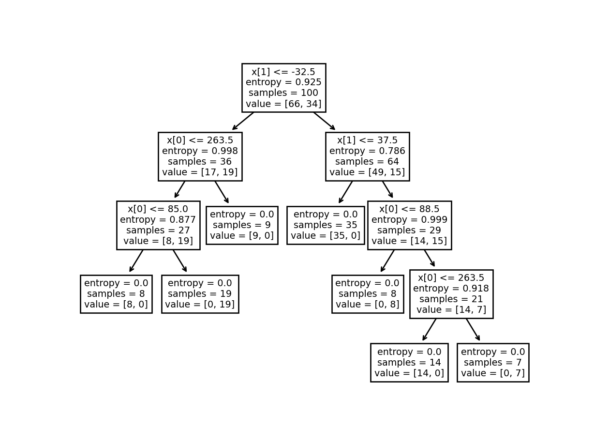
Code
library(tidyverse)
library(arrow)
# Load the dataset
ski_result_df <- read_csv("assets/ski_predictions.csv")
# Load the DT info
dt_df <- read_feather("assets/ski_dt.feather")
# Here we only have one value, so just read that
# value directly
lat_thresh <- dt_df$feat_threshold
ggplot(ski_result_df, aes(x=day_num, y=latitude, color=factor(good_skiing), shape=correct)) +
geom_point(
size = g_pointsize / 1.5,
stroke = 1.5
) +
geom_hline(
yintercept = lat_thresh,
linetype = "dashed"
) +
dsan_theme("half") +
labs(
x = "Time of Year",
y = "Latitude",
color = "True Class",
#shape = "Correct?"
) +
scale_shape_manual("DT Prediction", values=c(1,3), labels=c("Incorrect","Correct")) +
scale_color_manual("True Class", values=c(cbPalette[1], cbPalette[2]), labels=c("Bad (Sunny)","Good (Snowy)"))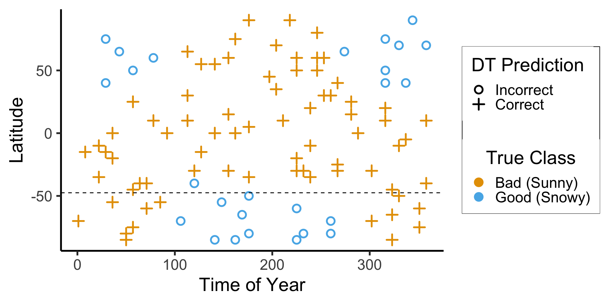
\[ \begin{align*} \mathscr{L}(R_1) &= -\left[ \frac{13}{25}\log_2\left(\frac{13}{25}\right) + \frac{12}{25}\log_2\left(\frac{12}{25}\right) \right] \approx 0.999 \\ \mathscr{L}(R_2) &= -\left[ \frac{61}{75}\log_2\left(\frac{61}{75}\right) + \frac{14}{75}\log_2\left(\frac{14}{75}\right) \right] \approx 0.694 \\ %\mathscr{L}(R \rightarrow (R_1, R_2)) &= \Pr(x_i \in R_1)\mathscr{L}(R_1) + \Pr(x_i \in R_2)\mathscr{L}(R_2) \\ \mathscr{L}(R_1, R_2) &= \frac{1}{4}(0.999) + \frac{3}{4}(0.694) \approx 0.77 < 0.827~😻 \end{align*} \]
Chopping the Feature Space Always Reduces Entropy (!)
- Visual proof:
Code
library(tidyverse)
my_ent <- function(x) -(x * log2(x) + (1-x)*log2(1-x))
loss_df <- tribble(
~x, ~label,
0.5, "L(R1)",
0.9, "L(R2)",
0.7, "L(R)"
)
loss_df <- loss_df |> mutate(
y = my_ent(x)
)
ggplot(data=tibble(x=c(0,1))) +
stat_function(fun=my_ent, linewidth = g_linewidth) +
geom_text(data=loss_df, aes(x=x, y=y, label=label)) +
xlim(c(0,1)) +
dsan_theme("half")Continuous Values
- What if we replace binary labels with continuous values: in this case, cm of snow?
Code
#format_snow <- function(x) sprintf('%.2f', x)
format_snow <- function(x) round(x, 2)
ski_sample['snowfall_str'] <- sapply(ski_sample$snowfall, format_snow)
#ski_df |> head()
#print(nrow(ski_df))
ggplot(ski_sample, aes(x=day, y=latitude, label=snowfall_str)) +
geom_text(size = 6) +
dsan_theme() +
labs(
x = "Time of Year",
y = "Latitude",
shape = "Good Skiing?"
) +
scale_shape_manual(values=c(1, 3)) +
scale_x_continuous(
breaks=c(ymd('2023-01-01'), ymd('2023-02-01'), ymd('2023-03-01'), ymd('2023-04-01'), ymd('2023-05-01'), ymd('2023-06-01'), ymd('2023-07-01'), ymd('2023-08-01'), ymd('2023-09-01'), ymd('2023-10-01'), ymd('2023-11-01'), ymd('2023-12-01')),
labels=c("Jan", "Feb", "Mar", "Apr", "May", "Jun", "Jul", "Aug", "Sep", "Oct", "Nov", "Dec")
) +
scale_y_continuous(breaks=c(-90, -60, -30, 0, 30, 60, 90))(Example adapted from CS229: Machine Learning, Stanford University)
Looking Towards Regression
- How could we make a decision tree to predict \(y\) from \(x\) for this data?
Code
library(tidyverse)
library(latex2exp)
expr_pi2 <- TeX("$\\frac{\\pi}{2}$")
expr_pi <- TeX("$\\pi$")
expr_3pi2 <- TeX("$\\frac{3\\pi}{2}$")
expr_2pi <- TeX("$2\\pi$")
x_range <- 2 * pi
x_coords <- seq(0, x_range, by = x_range / 100)
num_x_coords <- length(x_coords)
data_df <- tibble(x = x_coords)
data_df <- data_df |> mutate(
y_raw = sin(x),
y_noise = rnorm(num_x_coords, 0, 0.15)
)
data_df <- data_df |> mutate(
y = y_raw + y_noise
)
#y_coords <- y_raw_coords + y_noise
#y_coords <- y_raw_coords
#data_df <- tibble(x = x, y = y)
reg_tree_plot <- ggplot(data_df, aes(x=x, y=y)) +
geom_point(size = g_pointsize / 2) +
dsan_theme("half") +
labs(
x = "Feature",
y = "Label"
) +
geom_vline(
xintercept = pi,
linewidth = g_linewidth,
linetype = "dashed"
) +
scale_x_continuous(
breaks=c(0,pi/2,pi,(3/2)*pi,2*pi),
labels=c("0",expr_pi2,expr_pi,expr_3pi2,expr_2pi)
)
reg_tree_plotA Zero-Level Tree
- Trivial example: \(\widehat{y}(x) = 0\). How well does this do?
Code
library(ggtext)
# x_lt_pi = data_df |> filter(x < pi)
# mean(x_lt_pi$y)
data_df <- data_df |> mutate(
pred_sq_err0 = (y - 0)^2
)
mse0 <- mean(data_df$pred_sq_err0)
mse0_str <- sprintf("%.3f", mse0)
reg_tree_plot +
geom_hline(
yintercept = 0,
color=cbPalette[1],
linewidth = g_linewidth
) +
geom_segment(
aes(x=x, xend=x, y=0, yend=y)
) +
geom_text(
aes(x=(3/2)*pi, y=0.5, label=paste0("MSE = ",mse0_str)),
size = 10,
#box.padding = unit(c(2,2,2,2), "pt")
)A One-Level Binary Tree
- Let’s introduce a single branch node:
\[ \widehat{y}(x) = \begin{cases} \phantom{-}\frac{2}{\pi} &\text{if }x < \pi, \\ -\frac{2}{\pi} &\text{otherwise.} \end{cases} \]

Code
get_y_pred <- function(x) ifelse(x < pi, 2/pi, -2/pi)
data_df <- data_df |> mutate(
pred_sq_err1 = (y - get_y_pred(x))^2
)
mse1 <- mean(data_df$pred_sq_err1)
mse1_str <- sprintf("%.3f", mse1)
decision_df <- tribble(
~x, ~xend, ~y, ~yend,
0, pi, 2/pi, 2/pi,
pi, 2*pi, -2/pi, -2/pi
)
reg_tree_plot +
geom_segment(
data=decision_df,
aes(x=x, xend=xend, y=y, yend=yend),
color=cbPalette[1],
linewidth = g_linewidth
) +
geom_segment(
aes(x=x, xend=x, y=get_y_pred(x), yend=y)
) +
geom_text(
aes(x=(3/2)*pi, y=0.5, label=paste0("MSE = ",mse1_str)),
size = 9,
#box.padding = unit(c(2,2,2,2), "pt")
)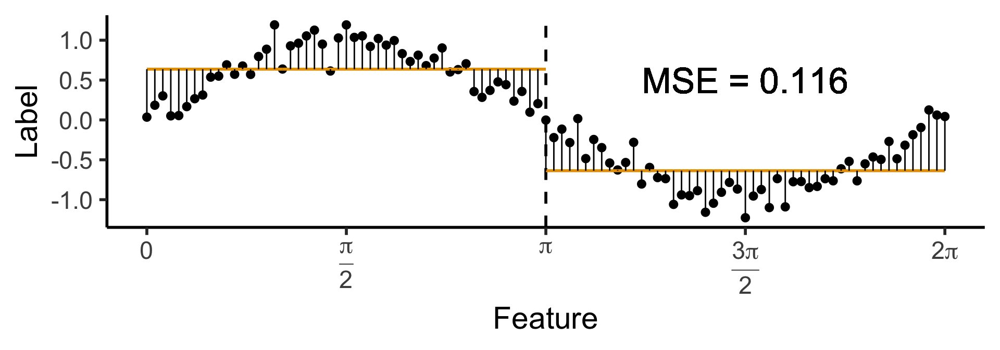
A One-Level Ternary Tree
- Now let’s allow three answers:
\[ \widehat{y}(x) = \begin{cases} \phantom{-}\frac{9}{4\pi} &\text{if }x < \frac{2\pi}{3}, \\ \phantom{-}0 &\text{if }\frac{2\pi}{3} \leq x \leq \frac{4\pi}{3} \\ -\frac{9}{4\pi} &\text{otherwise.} \end{cases} \]
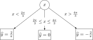
Code
cut1 <- (2/3) * pi
cut2 <- (4/3) * pi
pos_mean <- 9 / (4*pi)
get_y_pred <- function(x) ifelse(x < cut1, pos_mean, ifelse(x < cut2, 0, -pos_mean))
data_df <- data_df |> mutate(
pred_sq_err1b = (y - get_y_pred(x))^2
)
mse1b <- mean(data_df$pred_sq_err1b)
mse1b_str <- sprintf("%.3f", mse1b)
decision_df <- tribble(
~x, ~xend, ~y, ~yend,
0, (2/3)*pi, pos_mean, pos_mean,
(2/3)*pi, (4/3)*pi, 0, 0,
(4/3)*pi, 2*pi, -pos_mean, -pos_mean
)
reg_tree_plot +
geom_segment(
data=decision_df,
aes(x=x, xend=xend, y=y, yend=yend),
color=cbPalette[1],
linewidth = g_linewidth
) +
geom_segment(
aes(x=x, xend=x, y=get_y_pred(x), yend=y)
) +
geom_text(
aes(x=(3/2)*pi, y=0.5, label=paste0("MSE = ",mse1b_str)),
size = 9,
#box.padding = unit(c(2,2,2,2), "pt")
)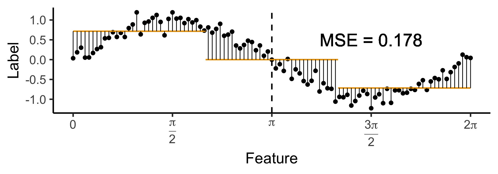
Another One-Level Ternary Tree
- Now let’s allow an uneven split:
\[ \widehat{y}(x) = \begin{cases} \phantom{-}0.695 &\text{if }x < (1-c)\pi, \\ \phantom{-}0 &\text{if }(1-c)\pi \leq x \leq (1+c)\pi \\ -0.695 &\text{otherwise,} \end{cases} \]
with \(c \approx 0.113\), gives us:
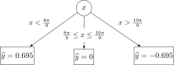
Code
c <- 0.113
cut1 <- (1 - c) * pi
cut2 <- (1 + c) * pi
pos_mean <- 0.695
get_y_pred <- function(x) ifelse(x < cut1, pos_mean, ifelse(x < cut2, 0, -pos_mean))
data_df <- data_df |> mutate(
pred_sq_err1b = (y - get_y_pred(x))^2
)
mse1b <- mean(data_df$pred_sq_err1b)
mse1b_str <- sprintf("%.3f", mse1b)
decision_df <- tribble(
~x, ~xend, ~y, ~yend,
0, cut1, pos_mean, pos_mean,
cut1, cut2, 0, 0,
cut2, 2*pi, -pos_mean, -pos_mean
)
reg_tree_plot +
geom_segment(
data=decision_df,
aes(x=x, xend=xend, y=y, yend=yend),
color=cbPalette[1],
linewidth = g_linewidth
) +
geom_segment(
aes(x=x, xend=x, y=get_y_pred(x), yend=y)
) +
geom_text(
aes(x=(3/2)*pi, y=0.5, label=paste0("MSE = ",mse1b_str)),
size = 9,
#box.padding = unit(c(2,2,2,2), "pt")
)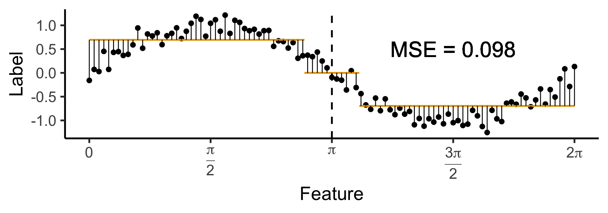
On to the Code!
- Scikit-learn has both
DecisionTreeClassifierandDecisionTreeRegressorclasses!
Random Forests
The Wisdom of Crowds
- Imagine you’re assembling a darts team. You can choose a team of 4 from among the following 8 players:
| Player | Skill |
|---|---|
| Larry “Lefty” Lechuga | Always hits 5cm left of bullseye |
| Rico Righty | Always hits 5cm right of bullseye |
| Lil Uppy Vert | Always hits 5cm above bullseye |
| Inconsistent Inkyung | Hits bullseye 50% of time, other 50% hits random point |
| Diagonal Dave | Always hits 5cm above right of bullseye |
| Dobert Downy Jr. | Always hits 5cm below bullseye |
| Gregor “the GOAT” Gregorsson | Hits bullseye 99.9% of time, other 0.1% hits random point |
| Craig | Top 25 Craigs of 2023 |
Your Opponents
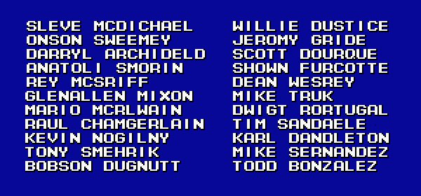High Variance, Low Bias

The Wisdom of Sheep
- Unfortunately, the “wisdom of crowds” phenomenon only works if everyone in the crowd is unable to communicate
- The minute people tasked with making decisions as a group begin to communicate (long story short), they begin to follow charismatic leaders
 , and the effect goes away (biases no longer cancel out)
, and the effect goes away (biases no longer cancel out) - The takeaway for effectively training random forests: ensure that each tree has a separate (ideally orthogonal) slice of the full dataset, and has to infer labels from only that slice!
Appendix: Covariance Matrix Magic
- For those interested (skipping over lots of matrix math): say you have a 2D covariance matrix \(\mathbf{\Sigma}\) with eigensystem \((\lambda_1, \mathbf{x}_1), (\lambda_2, \mathbf{x}_2)\)
- You can obtain a new covariance matrix \(\mathbf{\Sigma}'\) which has the same eigenvalues as \(\mathbf{\Sigma}\) but has eigenvectors \(\mathbf{x}'_1\) and \(\mathbf{x}'_2\), so long as these two eigenvectors are orthogonal.
- Example: you want to retain the eigenvalues \(\lambda_1 = 3\) and \(\lambda_2 = 1\) from the quiz-review slides, but want the data’s first principal component to be \(\mathbf{x}'_1 = (2,1)^\top\) and its second principal component to be \(\mathbf{x}'_2 = (-1,2)^\top\).
- By constructing the Eigenmatrix \(\mathbf{V} = \left[\begin{smallmatrix} \mathbf{x}'_1 & \mathbf{x}'_2\end{smallmatrix}\right]\) (the matrix whose columns are \(\mathbf{x}'_1\) and \(\mathbf{x}'_2\)), we can obtain \(\mathbf{\Sigma}'\) by computing:
\[ \mathbf{\Sigma}' = \mathbf{V}\mathbf{\Sigma}\mathbf{V}^{-1}. \]
- (Exercise: recreate the plot from the earlier PCA slides, but with these desired first and second principal components! See here for a deeper dive into why this works!)
References
DSAN 5000-02 Week 11: Decision Trees